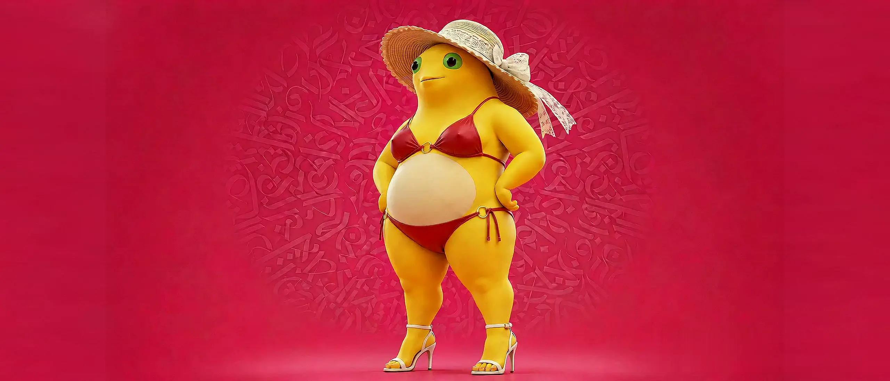

奶龙宝们 往下滑
树成林大学
大学生最应该上的大学
全网最懂感恩的社群
SHU CHENG LIN AI
03 / THE CREED
奶龙宝们，不只是围观者。
一起把普通日子 玩成高光现场
BUILT FOR THE NAILONG CREW
REAL-TIME EXPERIENCE SIGNALS
A
00
十张独一无二的角色卡牌
B
00
逐帧响应的影像节奏
C
∞
奶龙宝们的想象力
04 / THE DECK
NAILONG DECK
CLICK TO FLIP · MOVE TO TILT
SELECTED 00 / 10
05 / NEXT FRAME
进入摩天奶龙
你不会觉得完了吧？继续带你体验最惊艳的万象剧场
05
TWENTY ONE FORMS
万象剧场
01 / 21
SACRED / 01可是我觉得很神圣啊
LESSON / 02这期真的有教育意义
ORIGIN / 03万变不离其宗
06 / THE ENCORE